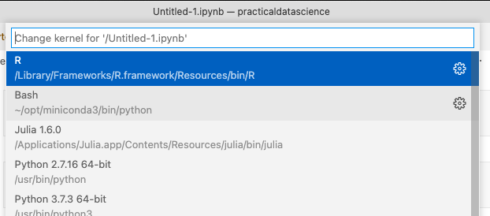

Running R Jupyter Notebooks in VS Code¶
As we discussed before, the idea of Jupyter is to separate the interface you are working with from the underlying programming language doing your analysis. This makes it possible to create one interface (a text editor, a window where results are displayed, etc.) that can be used to run your analyses in any number of different programs. In the Jupyter ecosystem, the program being used to actually run your analysis (i.e. Python, R) is referred to as a kernel.
That means that you can use Jupyter notebooks for more than Python! In this reading, I’ll show you how to setup R to work with Jupyter Notebooks.
Install Jupyter with miniconda¶
Even though we’ve been using jupyter notebooks in VS Code so you might think you’ve already installed jupyter, VS Code is just using a little version of jupyter that comes bundled with the editor. To setup R to work with Jupyter Notebooks, though, we have to do a real jupyter installation. So from the command line, run:
conda install jupyter
Setting Up R with Jupyter¶
Once that’s done, we’re ready to setup R to work with Jupyter!
If you do not have R installed, download and install it here. If you have R installed, skip to step 2.
Open R by opening your command line tool (Oh-My-Zsh on Mac, Cmder in Windows) and typing
R. Don’t open it by double clicking its icon!If you can’t open R by just typing
R, you have to launch it by putting in the absolute path to your R installation. On a Mac, doing this requires typing something like the following into your command line (depending on exactly where R is installed on your system):/Applications/R.app/Contents/MacOS/R. Similarly, using Cmder on Windows you need to type something like (depending on installed version):/c/Program Files/R/R-3.6.0/bin/R.exe.
Run
install.packages("IRkernel")After installation is complete, execute the command:
IRkernel::installspec()in R.
That should be it. To see if R installed correctly, open a new notebook in VS Code (open the Command Palette with Cmd-Shift-P, or by clicking on the wheel in the bottom left and selecting Command Palette, then type Jupyter Create New Notebook).
Then click on “Select Kernel” in the top right of the new notebook and select the option for R! It should look something like this (you probably won’t have as many options – like Bash or Julia – as me):
If you don’t see a button for R, make sure you followed all the steps above!
If the command ``IRkernel::installspec()`` generates this error:
Error in IRkernel::installspec() :
jupyter-client has to be installed but “jupyter kernelspec --version” exited with code 127.
In addition: Warning message:
In system2("jupyter", c("kernelspec", "--version"), FALSE, FALSE) :
error in running command
That means R can’t find your installation of jupyter. Make sure (a) you installed jupyter as instructed above, and (b) that conda is set up with your command line tool using the directions in Setting Up Your Environment, especially the last section on augmented command line tools.
If the command ``IRkernel::installspec()`` generates this error:
xcrun: error: invalid active developer path (/Library/Developer/CommandLineTools), missing xcrun at: /Library/Developer/CommandLineTools/usr/bin/xcrun
If that means that R want you to install Apple developer tools. Just run the following command at the command line (not in R, in your bash or oh-my-zsh session): xcode-select --install, or if that doesn’t work, run sudo xcode-select --reset. This should lead to a somewhat slow software installation.